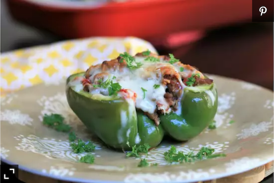

Low-Carb Stuffed Peppers

Description
Enjoy these traditional savory stuffed peppers without all the extra carbohydrates!
My family loves these! You can use any kind of ground sausage, hot or mild, your choice.
Ingredients
- cooking spray (such as Fry Lite)
- 1.5 pounds ground sirloin
- Half a pound of bulk pork sausage
- 6 Roma tomatoes, chopped, divided
- 1 small white onion, finely diced
- 1 tablespoon butter
- 2 teaspoons crushed garlic
- 1 teaspoon dried oregano, or to taste
- Half a teaspoon fennel seed, or to taste
- seasoned pepper to taste
- 4 large green bell peppers, tops and seeds removed
- 6 ounces crumbled feta cheese
- Half cup grated Parmesan cheese
- Half cup shredded mozzarella cheese (Optional)
Steps
- Coat a casserole dish with cooking spray.
- Cook ground sirloin and sausage in a skillet over medium-low heat until browned and crumbly, stirring often, 5 to 10 minutes. Drain thoroughly. Mix in 3/4 the tomatoes, onion, butter, garlic, oregano, fennel seed, and seasoned pepper. Simmer over low heat until meat mixture comes together, about 20 minutes.
- Preheat the oven to 350 degrees F (175 degrees C).
- Fill bell peppers with meat mixture, alternating with layers of feta cheese and Parmesan cheese. Place stuffed bell peppers side-by-side in the prepared casserole dish; add remaining tomatoes around and under the peppers so they cook up and into the peppers. Sprinkle with mozzarella cheese.
- Bake in the preheated oven until browned and bubbly, about 30 minutes.
Back To Index